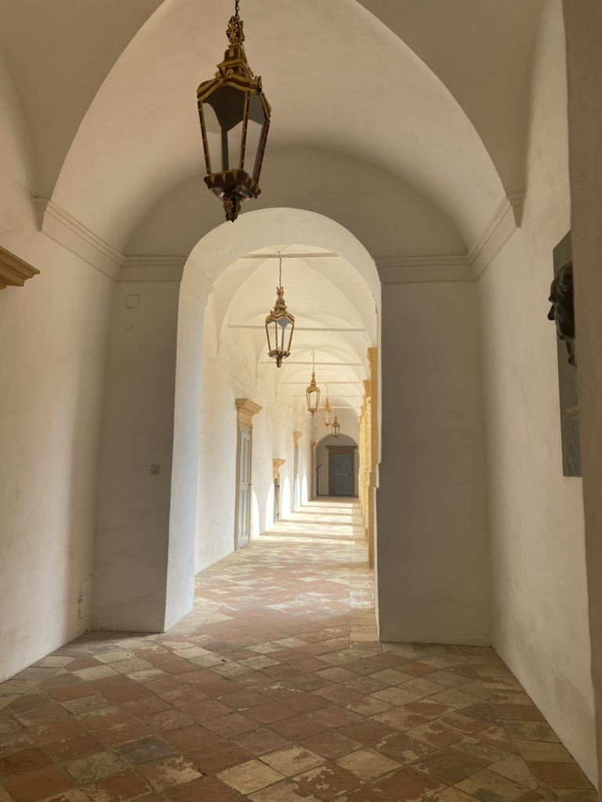
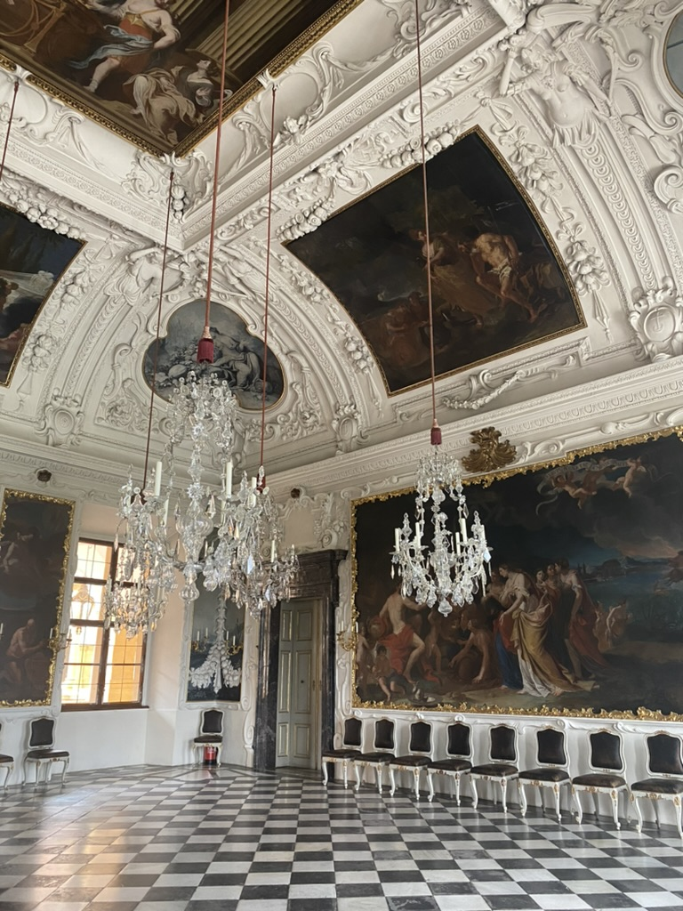
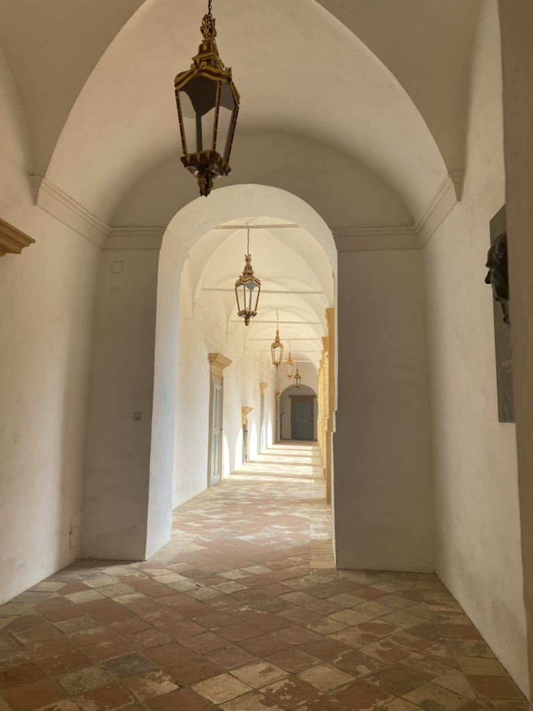
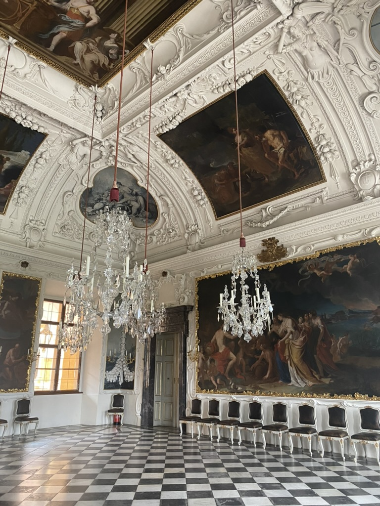
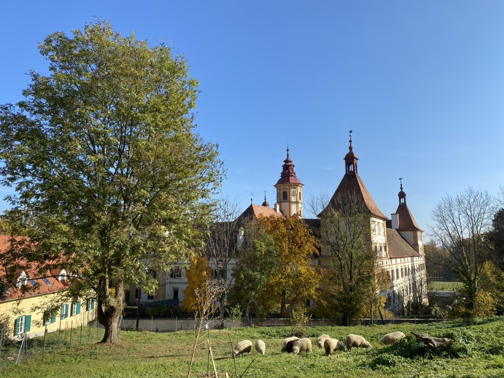
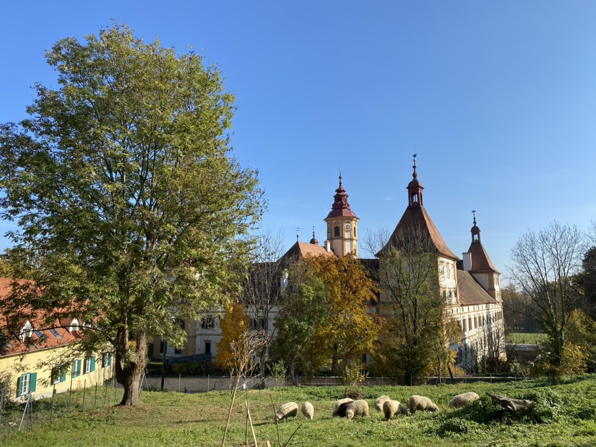

Architektur in Graz - Das Schloss Eggenberg

 



 

Das Schloss Eggenberg, ein barockes Juwel am westlichen Rand von Graz, ist nicht nur ein UNESCO-Weltkulturerbe, sondern auch ein faszinierendes Beispiel für die harmonische Verbindung von Architektur, Kunst und Natur. Erbaut im 17. Jahrhundert nach Plänen von Giovanni Pietro de Pomis im Auftrag von Hans Ulrich von Eggenberg, ist es ein universelles Symbol der Welt in Miniatur.
Das Schloss ist eine bewusste Abbildung des Kosmos: Es hat 365 Fenster (für die Tage eines Jahres), 24 Prunkräume (für die Stunden eines Tages) und 52 Tore (für die Wochen eines Jahres). Die vier Türme an den Ecken symbolisieren die Jahreszeiten, und die Zahl 24 (Stunden) spiegelt sich in den Prunkräumen wider. Ein Spaziergang durch die prunkvollen Säle, insbesondere den Planetensaal, ist wie eine Reise durch die europäische Geschichte und Mythologie. Die beeindruckenden Fresken, die barocke Ausstattung und die Sammlung von über 600 Gemälden, die sich durch die Jahrhunderte ziehen, erzählen Geschichten von Macht, Glauben und Wissen.
Der weitläufige Schlosspark, der im Stil eines englischen Landschaftsgartens angelegt ist, lädt zu ausgedehnten Spaziergängen ein. Hier triffst du auf frei laufende Pfauen, idyllische Teiche und versteckte Gartenpavillons.
Fun-Facts zum Schloss Eggenberg:
- Der Planetensaal: Das Herzstück des Schlosses, dessen Deckenfresko von Hans Adam Weissenkircher die allegorische Darstellung der vier Elemente und der Planeten zeigt – ein Meisterwerk des Barocks.
- Pfauen-Paradies: Die im Schlosspark frei lebenden Pfauen sind eine Attraktion für sich und tragen zur märchenhaften Atmosphäre bei. Ihre Rufe sind oft weit zu hören.
- Ein Schloss als Kalender: Die genaue Anzahl der Fenster (365), Prunkräume (24) und die Anordnung von Toren und Brunnen folgen einer komplexen numerologischen Symbolik, die das Schloss zu einem "begehbaren Kalender" macht.
- Alte Münzstätte: Im Schloss befindet sich auch das Universalmuseum Joanneum mit der ältesten Münzstätte Österreichs, die heute noch in Betrieb ist.